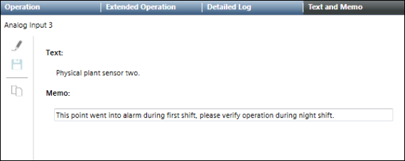

Text and Memo
This section provides reference and background information for Text and Memo. For procedures and workflows, see the step-by-step section.

Overview
Text and Memo displays configured object informational text and memos. Text and Memo also supports the following:
- Modifying the memo for an object (single or multiple lines)
- Copying both the informational text and memo text
- Pasting copied content as a table into Word or Outlook
Informational Text
Informational text is defined in Object Configurator and consists of two options: Text and Reference. Text is used to define technical instructions relating to a specific object. Reference is used to reference text in a text group as a way to share a text among multiple objects. Informational text supports multiple languages. For more information, see Setting the Informational Text in Engineering Help.
Memo Text
Memos are modified in the Text and Memo tab, available in the Contextual pane. Memos are useful for conveying instructions or additional information about objects important to a management station operator. For example, a memo can include notes about an object being out of service, scheduled maintenance, or parts that were ordered.
Reports
Informational text and memo text appear in the following four reports:
- Objects with Information Text
- Objects with Information Text Missing
- Objects with Memo Text
- Objects with Memo Text Missing.